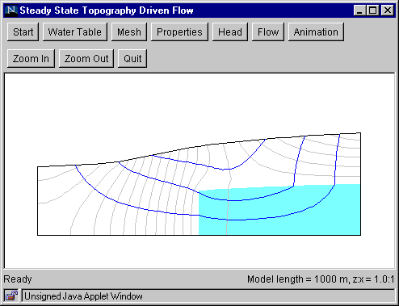

Step 6a: Flow (Compute Flow Paths)
This step computes ground-water flow paths.
- Click the "Flow" button to bring up the Flow Dialog Box.
- Select the "Flow path tracking" option.
- Select the direction of flow path tracking (forward and backward from the starting point, forward only,
or backward only).
- Click "OK.".
- Specify the starting point by clicking on the flow domain. The flow path will be
tracked from that point in the manner specified in the dialog box.
- Track additional flow paths by clicking additional starting points in the flow domain.

Go to Step 7a
Back to Step 5
Switch to Step 6b (Fluid particles)
Return to Introduction
|